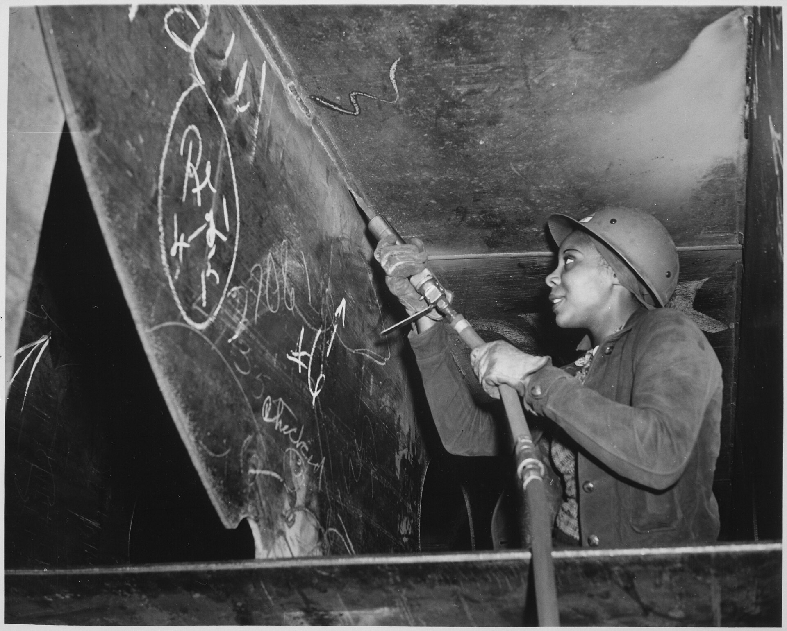
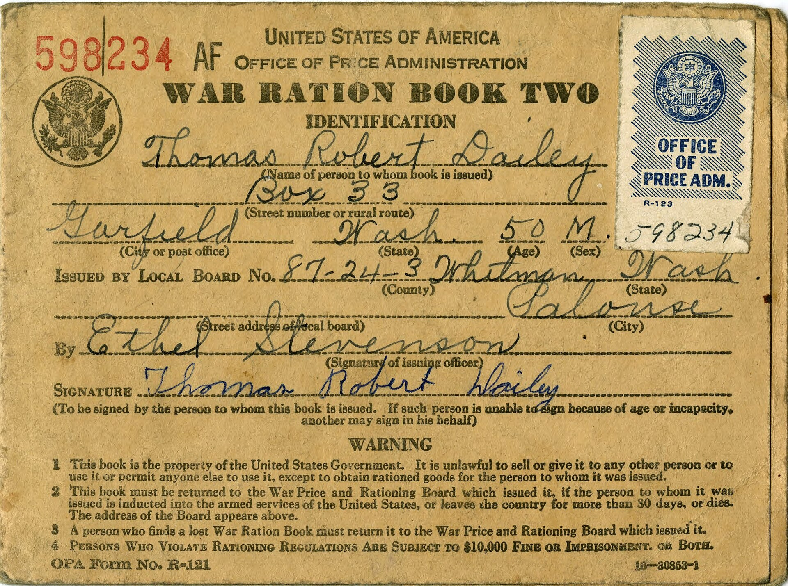

Directions: Your group staffs the conversion desk in 1942. At each station your group receives one shortage file. Work the file to decide what the government did about the shortage, which agency acted, who gained work, and who paid the cost. Work through the five stations in order, then assemble the conversion chart in Part 2.
Source: Station file prepared for this lesson from the federal rationing record. It is a labeled summary with figures from the record, not a single document.
Japan seized the rubber plantations of Southeast Asia in early 1942, cutting off the source of nearly all the natural rubber the United States imported. Every truck, plane, and jeep in the armed forces rolled on rubber, and the civilian supply had to shrink at once. Tire rationing began in January 1942 through local boards, and few civilians could buy a new tire for the rest of the war. Gasoline rationing followed nationwide in December 1942, less to save fuel than to save tires, with a national speed limit of 35 miles an hour. The government also built a synthetic rubber industry from near nothing, and by 1944 the new plants supplied most of the rubber the war required.
State what the government did about the rubber shortage, and name which agency ran the rationing side of the answer.
State who gained work from this shortage and who paid the cost. Name one group for each side.
Source: Station file prepared for this lesson from Kaiser shipyard records and federal war photographs. It is a labeled summary of the Richmond, California yards.
The Kaiser shipyards at Richmond, California had to build Liberty ships faster than any yard had built cargo ships before, and the workers were not in Richmond. The company recruited across the country, ran trains of new hires to the coast, and trained workers in weeks for jobs that had once required years of apprenticeship. Women entered the yards as welders, burners, and scalers, and Black workers recruited from the South took skilled ratings in large numbers. At the wartime peak the Richmond yards employed about 90,000 people. Building time for one Liberty ship fell from months to weeks, and one Richmond ship was completed in under five days in the fall of 1942.

State what the government and the yards did about the labor shortage, and name the agency that directed shipbuilding orders and materials.
State who gained work at Richmond and who paid the cost. Use the recruitment and training facts in the file.
Source: United States aircraft production by year, from the standard production record as compiled by the Army Air Forces. The table is the record, rounded to whole aircraft.
| Year | Aircraft produced |
|---|---|
| 1939 | 2,141 |
| 1940 | 6,086 |
| 1941 | 19,433 |
| 1942 | 47,836 |
| 1943 | 85,898 |
| 1944 | 96,318 |
| 1945 | 49,761 |
The table sums to about 300,000 aircraft across the war years. The growth was not automatic. Car plants converted to aircraft engines and parts, new plants rose near Los Angeles, Seattle, Detroit, and Wichita, and the government placed the orders, supplied the machine tools, and allocated the aluminum.
Use the table. By what factor did annual output grow between 1939 and the 1944 peak, and in which year did output pass 50,000?
State what the government did to produce this growth, which agency allocated the scarce materials, who gained the work, and who paid the cost.
Source: Station file prepared for this lesson from Office of Price Administration rationing records. It is a labeled summary, with the ration book record photographed below.
Sugar rationing began in May 1942, the first food ration of the war, because shipping losses and military demand cut the supply. Coffee followed, and in March 1943 meat, cheese, butter, and canned goods went on ration under a points system. Every person, including children, held a ration book of stamps, and a shopper paid both money and stamps at the counter. A family that ran out of meat points before the month ended ate differently until the new stamps came due. Local ration boards heard appeals, set the rules in public, and prosecuted the black market trade that grew beside the legal one.

State what the government did about the food shortage and name the agency that ran it. Explain how the stamps worked at the counter.
State who gained work from the rationing system and who paid the cost. Consider both the boards and the kitchen.
Source: Station file prepared for this lesson from federal war housing records for Richmond, California. It is a labeled summary of a common boomtown case.
Richmond held about 24,000 people in 1940. The Kaiser shipyards raised that figure to about 100,000 within a few years, and the housing did not exist. New arrivals slept in trailers, garages, converted storefronts, and dormitories the government built in rows near the yards, some of it heated poorly and crowded family by family into single rooms. The federal government funded war housing projects and the yards ran buses around the clock, but building lagged hiring for the whole war. Schools doubled sessions, clinics ran long lines, and the city government of a small town suddenly served a city. The workers who endured the housing built the ships on schedule anyway.
State what the government did about the housing shortage, and name the kind of agency action involved, funding and building rather than rationing.
State who gained work and who paid the cost in the boomtown. Use the school, clinic, and housing facts in the file.
Your group has worked five shortages. Now assemble the chart of the whole conversion, then write the closing judgment.
| Shortage | What the government did | Agency | Who gained work | Who paid the cost |
|---|---|---|---|---|
| 1. Rubber | ||||
| 2. Shipyard labor | ||||
| 3. Aircraft output | ||||
| 4. Sugar and meat | ||||
| 5. Boomtown housing |
In a short paragraph, judge the conversion as a whole. Name the shortage your group judges the government handled best, the shortage it handled worst, and the pattern that connects the civilian cost across all five files. Support each judgment with a figure or a fact from the station files.
What did the government do, and which agency acted? It rationed the civilian supply and built a substitute. Tire rationing began in January 1942 and gasoline rationing followed nationwide in December 1942 with a 35 mile an hour speed limit, run by the Office of Price Administration through local boards. The government also built a synthetic rubber industry that by 1944 supplied most of the rubber the war required.
Who gained work, and who paid the cost? Workers in the new synthetic rubber plants and on the local ration boards gained work. Civilian drivers paid the cost in worn tires they could not replace, gasoline they could not buy beyond their stamps, and a slower road life for the length of the war.
What did the government and the yards do, and which agency acted? The yards recruited nationally, transported new hires to Richmond, and trained workers in weeks for skilled ratings. The War Production Board directed production and allocated the steel and other materials the yards consumed, and federal orders paid for the ships.
Who gained work, and who paid the cost? Women hired as welders, burners, and scalers and Black workers recruited from the South gained skilled work at wartime wages, among about 90,000 yard employees at the peak. The cost fell on the migrants themselves in travel, crowded housing, and a new city that could not serve them, the cost Station 5 prices in full.
Use the table. Output grew from 2,141 aircraft in 1939 to 96,318 in 1944, a growth of about forty five times. Output first passed 50,000 in 1943, at 85,898 aircraft.
Government action, workers, and cost. The government placed the orders, converted car plants, supplied machine tools, and allocated aluminum, with the War Production Board allocating the scarce materials. Aircraft plant workers in Los Angeles, Seattle, Detroit, Wichita, and converted plants everywhere gained the work. Taxpayers and bond buyers paid the bill, and civilians paid in consumer goods unbuilt, above all new cars, which the plants had stopped making.
What did the government do, and which agency acted? The Office of Price Administration rationed sugar from May 1942 and placed meat, cheese, butter, and canned goods under a points system in March 1943. Each person held a ration book of stamps, and a shopper paid money and stamps together at the counter, so no buyer could take more than a set share of a scarce food.
Who gained work, and who paid the cost? Local ration board members and staff, grocers administering the stamps, and enforcement workers gained work. Every household paid the cost in planning, queuing, and meals shaped by the stamp book, and families whose points ran out before the month ended paid it most directly.
What did the government do? It funded and built war housing, dormitories and projects near the yards, and supported round the clock transport, but building lagged hiring for the whole war, so the action was real and still insufficient.
Who gained work, and who paid the cost? Construction workers, bus drivers, teachers, and clinic staff gained work as the city quadrupled from about 24,000 to about 100,000 people. The migrants paid the cost in trailers, garages, and single rooms, and the whole town paid it in doubled school sessions and long clinic lines.
The completed chart should read: Rubber, rationing and synthetic plants, Office of Price Administration, plant and board workers, civilian drivers. Shipyard labor, national recruiting and rapid training under federal orders, War Production Board, women and Black workers among about 90,000 yard employees, the migrants in travel and housing. Aircraft output, government orders, conversion, and aluminum allocation, War Production Board, aircraft plant workers nationwide, taxpayers, bond buyers, and buyers of unbuilt consumer goods. Sugar and meat, ration books and points, Office of Price Administration, board and store staff, every household at the counter. Boomtown housing, federal war housing funding and building, the federal housing program under the war agencies, construction and service workers, migrant families and the town itself.
Full credit for the paragraph should be awarded if the student: